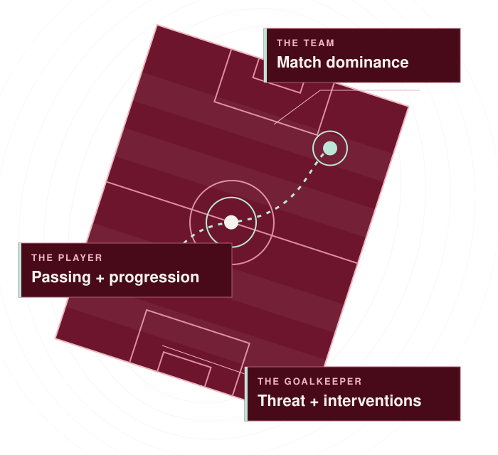

The team
What might the match look like?
Score and result, clean-sheet outlook and match dominance. Recent form and fixtures provide context.
REDS / REPORTS + FAN QUESTIONS
Look more closely at Liverpool’s team and players, with the evidence and limits explained.
Open REDS reports
THE NEXT PREMIER LEAGUE MATCH
Different questions need different targets. A player forecast is conditional on that player appearing.
Score and result, clean-sheet outlook and match dominance. Recent form and fixtures provide context.
Starting, passing share, progression versus losses, regaining possession, aerial contests, crossing and involvement around the box.
Shot threat faced, goals prevented and interventions around the penalty area.
Coverage reviewed 29 October 2026. Evidence varies by task and player. Attacking contribution remains experimental.
THE FAN NOTEBOOK
The existing notebook asks more specific questions about players, roles and periods. These are questions to explore, rather than conclusions about who is better.
How do his duels compare across different periods?
How do they compare in the number-ten role?
How does his contribution differ between defensive and attacking roles?
Evidence dates and coverage vary. The individual report explains what the comparison can support.
Explore the fan notebookHOW THE WORK IS CHECKED
Keep the dated pre-match record, then check it against later available evidence. Missing outcomes stay pending.
Historical baseline checks are separate from genuine pre-match records. New evidence informs later forecasts without rewriting earlier records.
Read the development log